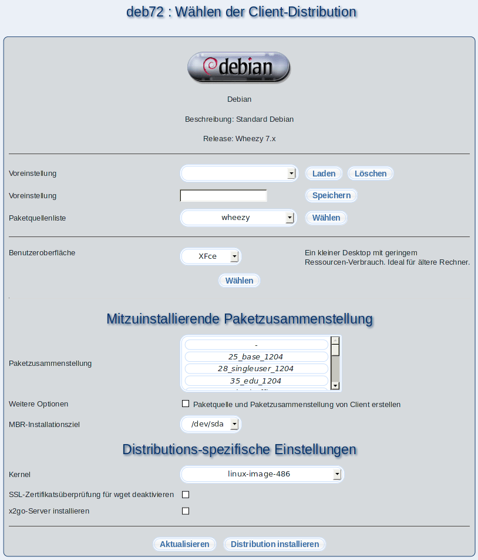

Eine Distribution ist eine Zusammenstellung von verschiedenen Softwarepaketen, die auf unterschiedlichen Medien (CD, DVD, Internet) vertrieben werden. Es gibt Distributionen, die frei sind und zum kostenlosen Download im Internet angeboten werden. Ein Beispiel dafür ist Debian. Unterschiede bei den Distributionen bestehen lediglich in den eingesetzten Installationsprogrammen und der grafischen Aufmachung der Desktops. Die Auswahl einer Distribution ist meist reine Geschmackssache. Um die Unterstützung von verschiedenen Client-Distributionen in m23 zu ermöglichen, gibt es nun diesen Auswahl-Dialog.
- Voreinstellungen laden: Wählen Sie dazu eine zuvor abgespeicherte Voreinstellung aus der Auswahlliste aus und klicken Sie auf ''Laden''.
- Voreinstellungen löschen: Sie können eine ausgewählte Voreinstellung löschen, indem Sie auf ''Löschen'' klicken.
- Voreinstellungen speichern: Die aktuellen Einstellungen können Sie als Voreinstellung speichern, indem Sie einen Namen eingeben und danach auf ''Speichern'' klicken.
- Paketquellenliste: Zuerst müssen Sie eine Paketquelle auswählen, die Sie unter Pakete
Paketquellenliste erstellt haben. Mit Auswahl der Paketquelle werden gleichzeitig die Distribution, das Release sowie die wählbaren Benutzeroberflächen festgelegt. Klicken Sie dazu auf ''Wählen''. Danach wird das Logo der Distribution zusammen mit einer kurzen Beschreibung oben angezeigt.
- Benutzeroberfläche: Abhängig von der Paketquelle können Sie verschiedene Grafische Oberflächen auswählen. Alternativ steht ''Textmode'' zur Verfügung, um einen Server zu installieren, der keinen grafischen Desktop benötigt.
- Paketzusammenstellung: Sie können hier eine Paketzusammenstellung wählen, die zusammen mit dem Betriebssystem installiert wird.
- MBR-Installationsziel: m23 versucht automatisch die erste Festplatte für die Installation des Bootmanagers zu bestimmen. Möchten Sie eine hiervon abweichende Festplatte verwenden, so können Sie diese hier auswählen. Bedenken Sie, daß dies die Festplatte sein muß, die vom BIOS zum Booten verwendet wird.
- Distributions-spezifische Einstellungen: Jede Distribution kann eine Vielzahl von Optionen definieren, die dann zur Installation dieser Distribution genutzt werden.
Zum Starten der Installation klicken Sie abschließend auf ''Distribution installieren''.
root
2017-12-13